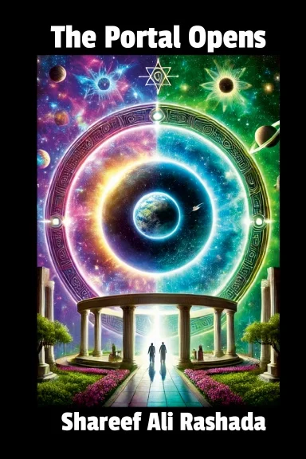

Free audiobook
Listen to The Portal Opens.
The complete book in 63 chapters, 7 h 41 min in all. Press play and it carries on from chapter to chapter, and remembers where you stopped.
Narrated with an AI voice (ElevenLabs).

The Portal Opens · complete audiobook
1. Opening
63 chapters · 7 h 41 minChapters
- 1Opening02:15
- 2Gabriel's Glossary15:02
- 3Gabriel's Introduction and Mission07:12
- 4The Untold Story of Jesus08:26
- 5The Review of the Seventh Bestowal08:53
- 6The Crisis Before the Bestowal04:37
- 7The Mandate of the Seventh Bestowal07:47
- 8Research of a World Operating Normally11:35
- 9The Intimate Talk with the Trinity09:14
- 10The Trinity Inquires About Super-universe Guidance08:27
- 11The Trinity Inquires About Local Universe Guidance08:32
- 12Celestial Strategy and Divine Fundamentals08:29
- 13The Consequences of Isolation08:40
- 14The Mechanics of Bestowal and the Trinity's Role in Life10:20
- 15The Trinity's Response: Acknowledging Sovereignty09:12
- 16The Benefits of the Seventh Bestowal08:39
- 17The Simulations and Reality08:22
- 18The Father's Revelation and Confirmation08:51
- 19Epilogue05:39
- 20A Reflection of Darkness08:40
- 21The Judgement of Lucifer08:25
- 22The Rise of Lucifer05:48
- 23A Conversation with Michael06:06
- 24The First Whisperings of Rebellion07:13
- 25The Declaration Unveiled09:16
- 26The Seeds of Turmoil on Urantia08:37
- 27Visions Within the Reflectivity Crystal09:52
- 28The Final Reckoning07:25
- 29Gabriel's Reflections on Lucifer's Imprisonment06:35
- 30The Confession of Caligastia: The Fall of a Prince04:19
- 31The Introduction to the Court05:39
- 32The Role of a Planetary Prince06:35
- 33Caligastia's Reckoning07:11
- 34Caligastia's Contributions10:59
- 35Caligastia's Betrayal05:28
- 36The Intertwining Paths of Rebellion and Redemption06:30
- 37The Ripple Effect and Personal Reflections06:27
- 38A Reunion of Fallen Beings02:32
- 39Building a Bridge to Urantia02:57
- 40Epilogue: The Light of Truth06:48
- 41Journey to Jerusem06:43
- 42Adam and Eve's Message to Humanity06:06
- 43Adam and Eve: Origin Story07:24
- 44Adam and Eve's Confession08:59
- 45The Legacy of Adam and Eve06:57
- 46Adam and Eve's Final Messages08:45
- 47Final Message from Gabriel03:46
- 48Melchizedek: Introduction02:15
- 49Introduction to Melchizedek: Origins, Mission and Relevance08:22
- 50The Nature of Personality08:36
- 51The Seven Adjutant Mind-Spirits09:34
- 52The Seven Psychic Circles09:14
- 53The Spirit of Truth08:41
- 54The Energy Spectrum08:12
- 55Personality Survival07:16
- 56Soul Building08:42
- 57Cosmic Context06:56
- 58Morontial Incompleteness08:28
- 59The Final Integration06:55
- 60Final Thoughts on the Lessons of Machiventa Melchizedek06:32
- 61Reflections on the Transmission04:12
- 62The Awakening of Urantia02:24
- 63Final Transmission from Gabriel02:46
Prefer an app? Follow it on Spotify, or add the feed to any podcast player: https://peopleoftheworld.net/audiobook.xml
Read and listen, part by part
Every part of the free online edition has its chapters ready to play at the top of the page.
Gabriel's Introduction and Mission
24 min · read along with the textRead and listen →
The Untold Story of Jesus
2 h 16 min · read along with the textRead and listen →
A Reflection of Darkness
1 h 18 min · read along with the textRead and listen →
The Confession of Caligastia
1 h 5 min · read along with the textRead and listen →
Journey to Jerusem
49 min · read along with the textRead and listen →
The Lessons of Machiventa Melchizedek
1 h 40 min · read along with the textRead and listen →
The Final Transmission
9 min · read along with the textRead and listen →
Keep a copy on your shelf
The paperback, hardcover and Kindle editions support the work of People of the World.